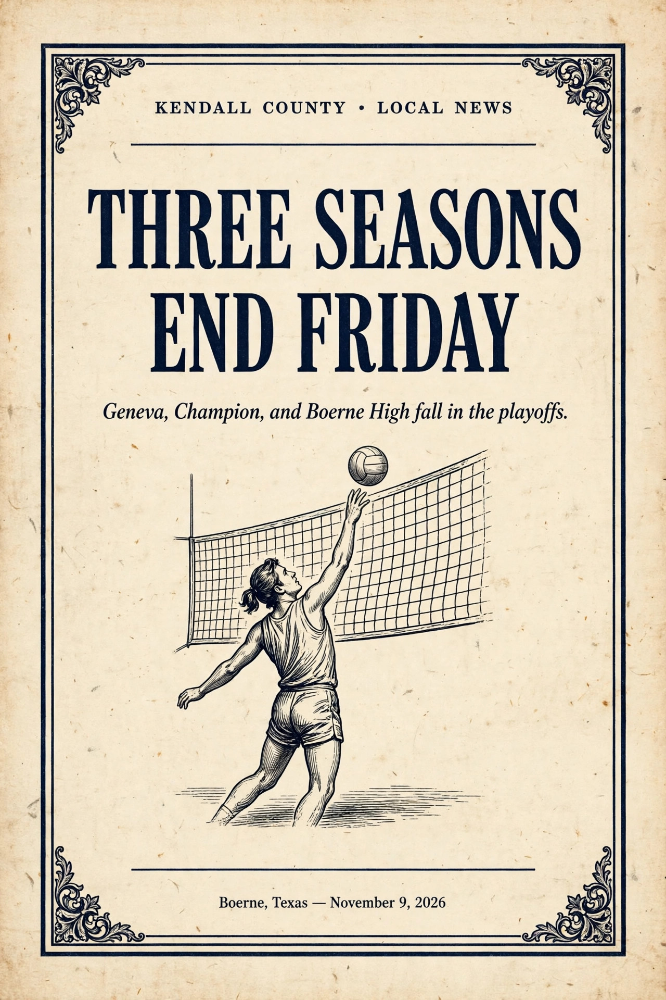

Sports | November 9, 2026
Geneva fell in the TAPPS 4A state semifinal, Champion lost a five-set third-round match, and Boerne High was swept in the third round, ending all three Boerne-area volleyball seasons Friday.
Community | November 9, 2026
Boerne's Veterans of Foreign Wars Post 688 and American Legion Post 313 will hold a joint Veterans Day observance Wednesday, November 11, at 11 a.m.
Development | November 9, 2026
TxDOT officials will give an update on the Texas 46 West safety project at a public session Tuesday, November 10, at 6:30 p.m.
Sports | November 8, 2026
Geneva opened the postseason Saturday at Dallas Christian in Mesquite and fell 54-23 in the first round of the TAPPS playoffs, ending the season at 9-2.
Sports | November 8, 2026
Both Boerne Champion cross country teams finished in the top 10 at the 5A state meet Saturday in Round Rock, with the girls sixth and the boys eighth.
Sports | November 7, 2026
Boerne High beat Liberty Hill Legacy Ranch 32-27 on the final play Friday night to finish a perfect 10-0 regular season, while Champion closed out at 9-1 with a 49-7 win at Manor.